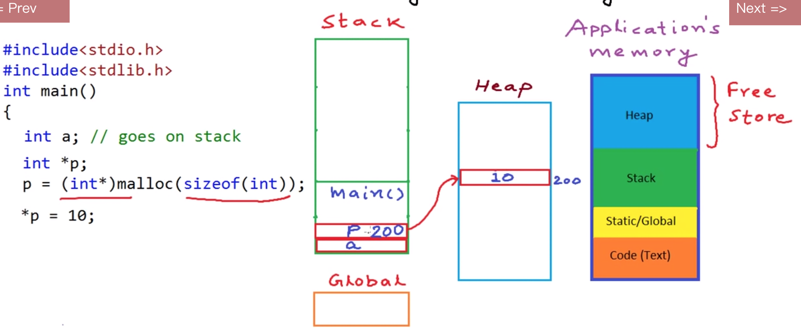
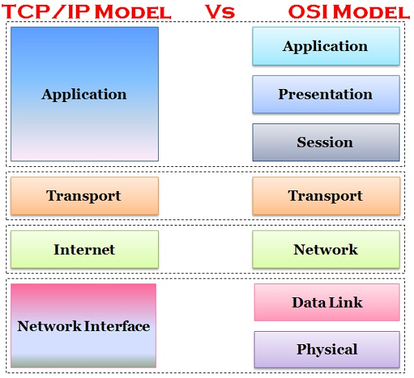
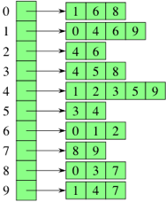

Interview review
Thread vs Process
- Definition
Aprocessis an instance of a computer program that is being executed. It contains the program code and its current activity. A process may be made up of multiple threads of execution that execute instructions concurrently. A process has a virtual address space, executable code, open handles to system objects, a security context, a unique process identifier, environment variables, a priority class, minimum and maximum working set sizes, and at least one thread of execution. Each process is started with a single thread, often called the primary thread, but can create additional threads from any of its threads.
All threads of a process share its virtual address space and system resources. Typical difference is, processes run in separated memory while threads run in shared memory.
A thread is the entity within a process that can be scheduled for execution. All threads of a process share its virtual address space and system resources. In addition, each thread maintains exception handlers, a scheduling priority, thread local storage, a unique thread identifier, and a set of structures the system will use to save the thread context until it is scheduled. Typical difference is, processes run in separated memory while threads run in shared memory. Processes are typically independent, while threads exist as subsets of a process processes carry considerably more state information than threads, whereas multiple threads within a process share process state as well as memory and other resources processes have separate address spaces, whereas threads share their address space processes interact only through system-provided inter-process communication mechanisms context switching between threads in the same process is typically faster than context switching between processes.
How to switch processes using interrupt
Store the state intoPCB, process control block. load other process’ PCB from kernel memory,- When the interrupt comes, the state of the current process is stored in a data structure call process control block(PCB)
- The PCB is stored on a per-process stack in kernel memory
- A handle to the PCB is added to a queue of processes that are ready to run, often called the ready queue.
- So when the CPU wants to switch the process back, it simply load the handle of the PCB from the ready queue, and restore the context from the PCB
Difference between process switching and thread switching
The main distinction between a thread switch and a process switch is that during a thread switch, the virtualmemory spaceremains the same, while it does not during a process switch. Both types involve handing control over to the operating system kernel to perform the context switch. The process of switching in and out of the OS kernel along with the cost of switching out the registers is the largest fixed cost of performing a context switch.
What is the difference between context switching and interrupt handling? https://goo.gl/RBp7LY
UCSD, I/O and Processes https://goo.gl/4Byzg8
thread context switch vs process context switch, https://goo.gl/CqgHjE
Deadlock
Deadlock describes a situation where two or more threads are blocked forever, waiting for each other. A multi-threaded program may suffer from the deadlock condition because the synchronized keyword causes the executing thread to block while waiting for the lock.
- The reason of deadlock:
Deadlock can arise if following four conditions hold simultaneously (Necessary Conditions)Mutual Exclusion && Hold and Wait && No preemption && Circular wait
- Mutual Exclusion: One or more than one resource non-sharable (Only one process can use at a time)
- Hold and Wait: A process is holding at least one resource and waiting for resources.
- No Preemption: A resource cannot be taken from a process unless the process releases the resource.
- Circular Wait: A set of processes are waiting for each other in circular form.
- Deadlock prevention:
Try to eliminate one of the four condition
Eliminate Mutual Exclusion
It is not possible to dis-satisfy the mutual exclusion because some resources, for example, printer, is inherently non-shareable.Eliminate Hold and wait
Allocate all required resources to the process before start of its execution, this way “hold and wait” condition is eliminated but it will lead tolow device utilization.
Process will make new request for resources after releasing the current set of resources. This solution may lead tostarvation.Eliminate No Preemption
Preempt resources from process when resources required by other high priority process.Eliminate Circular Wait
Each resource will be assigned with a numerical number. A process can request for the resources only in increasing order of numbering.
Memory

Heap vs Stack
The capacity of stack is limited but in contrast heap has no limited size until you reach the size of virtual memory.You can use the stack if you know exactly how much data you need to allocate before compile time and it is not too big. You can use heap if you don’t know exactly how much data you will need at runtime or if you need to allocate a lot of data.
Stack
Static memory allocation, variables allocated on the stack are dealt with when the program is compiled.
When a function calls another function which in turns calls another function etc., the execution of all those functions remains suspended until the very last function returns its value.
The stack is always reserved in a LIFO order, the most recently reserved block is always the next block to be freed.
Stack overflow: infinitely function calls exhausted the reserved stack space
Because limited capacity of stack plus infinite function calls with ultimately run out of all the memory spaces in stack.Heap
Can think of it as a large pool of memory that can freely use.
Dynamic memory allocation, variables allocated on the heap have their memory allocated at run time- In C++:
use operatornewanddeleteto manipulate heap memory.
In OS machine problem, applied headmap and bitmap to determine a head of allocated memory and used memory frame.
- In C++:
Virtual memory
Any error if two processes writing on the same address?
Nothing is wrong. Process uses virtual memory, the same address value in two different processes maps to two different physical address.Detailed Explain:
virtual memory concept-> addr in vm-> therefore different- concept of virtual memory
Virtual memory is a mechanism used by the operation system to “cheat” the process about the memory space a process can use. What a process can see is a large continuous memory space, so it feels happy about it. The real story is: the main memory(RAM) of a computer is very limited(For mac, it is 8GB). - The base of virtual memory is a mapping from the virtual address to the real physical address.
- So if 2 processes are both running under the virtual memory mechanism, the real physical address of the OS is invisible to both of them. What they can see is the virtual memory address. Even though the see a same address, that might be mapped to different physical address underlaying.
- concept of virtual memory
Throughput & Latency
Latency is the amount of time to finish an operation. Latency is the delay from input into a system to desired outcome.Throughput is the amount of work we finished in a unit time. Throughput is a measure of how many units of information a system can process in a given amount of time.
Hash table
time complexity: $O(1)$ average, $O(n)$ in worst case.Collision: When two data stored in the same slot, caused the table can only keep one of them.
Solution:
Chaining: use linked list to link every element in the same slot.
Open addressing: use probing method to find empty slot in the table.
- Linear probing
- Quadratic probing
- Double hashing
Heap
- min heap: always have the smallest element at top.
- insert new element: add it to the last child, then compare with it’s parent and decide to swap or not.
- remove smallest element from top: take the last element, from top-bottom and left to right, to the root. Then swap it with the smaller element between its children.
Heap sort: sorting technique to find min/max element.
C++, Object oriented programming
- Object vs Class
A class is a template for objects. A class defines object properties including a valid range of values, and a default value. A class also describes object behavior.
An object is a member or an “instance” of a class. An object has a state in which all of its properties have values that you either explicitly define or that are defined by default settings.
https://www.geeksforgeeks.org/inheritance-in-c/
Interface vs Abstract class
Interface: define required methods when an object need to collaborate with other objects.
Abstract class: define what needs to be inheritance in the whole inheritance system. Child class can override the method or keep the same as father class.Virtual function and Pure Virtual function
virtual function
1
2
3
4
5
6
7
8
9
10
11
12
13
14class Shape {
protected:
int width, height;
public:
Shape( int a = 0, int b = 0) {
width = a;
height = b;
}
virtual int area() {
cout << "Parent class area :" <<endl;
return 0;
}
};A virtual function is a function in a base class that is declared using the keyword virtual. Defining in a base class a virtual function, with another version in a derived class, signals to the compiler that we don’t want static linkage for this function.
pure virtual function
1
2
3
4
5
6
7
8
9
10
11
12
13class Shape {
protected:
int width, height;
public:
Shape(int a = 0, int b = 0) {
width = a;
height = b;
}
// pure virtual function
virtual int area() = 0;
};The = 0 tells the compiler that the function has no body and above virtual function will be called pure virtual function.
mutex
A mutex is a lockable object that is designed to signal when critical sections of code need exclusive access, preventing other threads with the same protection from executing concurrently and access the same memory locations.Inheritance
- Base class: The class whose properties are inherited by sub class is called base class
Derived class: The class that inherits properties from another class
Diamond problem: lowest level child have several copy after inheritance, and will have ambiguity problem. The way to solve is virtual inheritance.
1
2
3
4
5A
/ \
B C
\ /
D
1
2
3Solution:
class A{public: int _a;};
class B: virtual public A{public: int _b;};- Multi-level inheritance

https://goo.gl/dPQVum
https://www.geeksforgeeks.org/inheritance-in-c/Static/Dynamic binding
Static, compile time binding is easy. There’s no polymorphism involved. You know the type of the object when you write and compile and run the code. Sometimes a dog is just a dog.Dynamic, runtime binding is where polymorphism comes from.
If you have a reference that’s of parent type at compile type, you can assign a child type to it at runtime. The behavior of the reference will magically change to the appropriate type at runtime. A virtual table lookup will be done to let the runtime figure out what the dynamic type is.
void pointer
The void pointer, also known as the generic pointer, is a special type of pointer that can be pointed at objects of any data type!
However, because the void pointer does not know what type of object it is pointing to, it cannot be dereferenced directly! Rather, the void pointer must first be explicitly cast to another pointer type before it is dereferenced.1
2
3
4
5
6
7
8
9
10
11
12
13
14
15int nValue;
float fValue;
struct Something
{
int n;
float f;
};
Something sValue;
void *ptr;
ptr = &nValue; // valid
ptr = &fValue; // valid
ptr = &sValue; // valid
Network
how HTTPS works
- browser initiate HTTPS request to webserver
- webserver have public key and private key. Respond with public key.
- Browser create session key.
- Encrypt the session key with the public key from web server.
- Webserver received the encrypted data, use private key to decrypt and get the session key.
- Use session key to establish SSL connection.
https://tiptopsecurity.com/how-does-https-work-rsa-encryption-explained/
how packet transmit from one host to another
https://www.quora.com/How-does-a-packet-get-from-one-network-to-another- Local network: A send to B
- A enter the IP(10.10.10.1) address of B. But it’s not enough, since we need MAC(Media Access Control) to uniquely identify device.
- To find a remote workstation’s MAC address, the Address Resolution Protocol (ARP) is used.
- A send out ARP packets asking who is 10.10.10.1, and only B would response with ARP reply
- A send the packet with IP and MAC address from B
- Local network: A send to B
TCP, UDP, IP

- What is the point of UDP when we already have IP?
TCP three way handshake

OSI model
Routing protocol
RIP vs OSPF
RIP, Routing Internet Protocol, depends on hop counts to determine the best path while OSPF depends on cost (bandwidth) which helps in determining the best path.
Convergence in the RIP is slow in contrast it is fast in OSPF.Open Shortest Path First is a link state and hierarchical IGP routing algorithm. It is an enhanced version of RIP, which comprises features like multipath routing, least cost routing, and load balancing. Its major metric is the cost to determine the best path.
OSPF offers load balancing in which it distributes overall traffic routes equally. It also allows networks and routers partitioned into subsets and areas which enhance the growth and ease of management.https://techdifferences.com/difference-between-rip-and-ospf.html
QoS
QoS is defined as the control and management of a network’s data transmission capabilities by giving priority to certain types of time-sensitive and mission-critical data protocols.
https://www.comparitech.com/net-admin/what-is-qos/
Graph- Data structure
Edge list: To represent an edge, we just have an array of two vertex numbers, or an array of objects containing the vertex numbers of the vertices that the edges are incident on. If edges have weights, add either a third element to the array or more information to the object, giving the edge’s weight. Since each edge contains just two or three numbers, the total space for an edge list is $Θ(E)$.
Adjacency matrix: For a graph with $|V|$, an adjacency matrix is a $|V|×∣V∣$ matrix of 0s and 1s, where the entry in row $i$ and column $j$ is 1 if and only if the edge $(i,j)$ is in the graph. If you want to indicate an edge weight, put it in the row $i$, column $j$ entry, and reserve a special value (perhaps null) to indicate an absent edge.

- Adjacency list

https://www.geeksforgeeks.org/graph-and-its-representations/
https://goo.gl/ZTSF8b
- Union-Find
https://en.wikipedia.org/wiki/Disjoint-set_data_structure
https://www.geeksforgeeks.org/union-find/
reference:
http://alrightchiu.github.io/SecondRound/hash-tableintrojian-jie.html
https://www.geeksforgeeks.org/heap-sort/
https://goo.gl/1Vf39q
https://goo.gl/9G424N